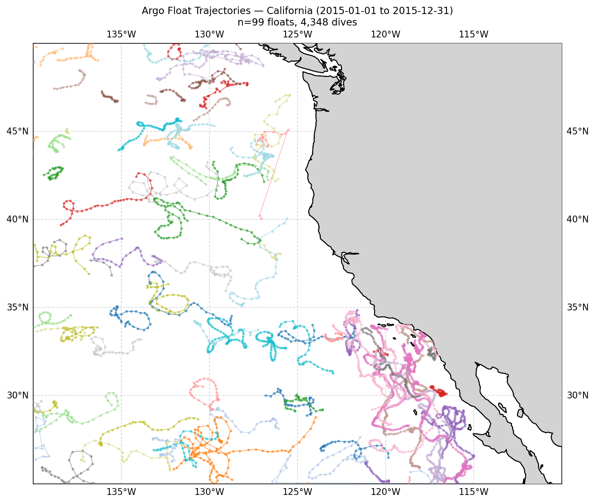
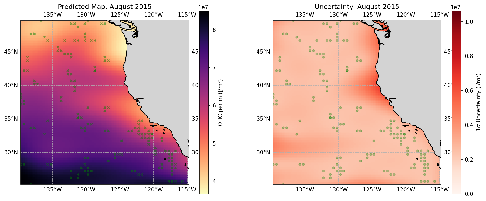
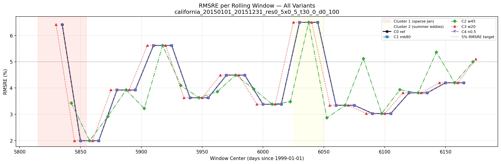
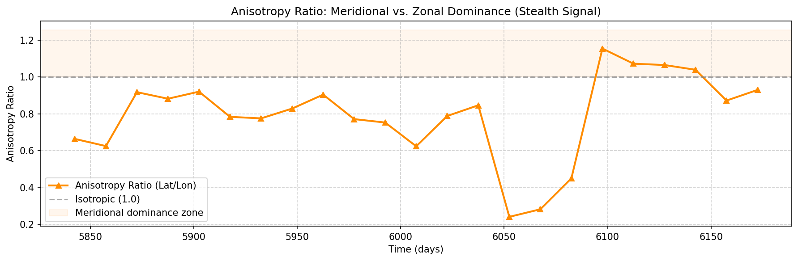

California Current System · Subsurface Warming Research
Most climate resilience assessments of Eastern Boundary Upwelling Systems rely on satellite sea-surface temperature, but Ekman upwelling continuously pulls cold deep water to the surface, masking subsurface warmth from space. This project conducts a vertical audit of the California Current using the Argo float array: separating the water column into three thermodynamically distinct layers and applying 3D Gaussian Process Regression (Kriging) to construct continuous, probabilistic ocean heat content fields with explicit uncertainty. The goal is to detect "stealth warming": source water heating transported by the California Undercurrent that has not yet surfaced.
How It Works
Sparse float observations transformed into continuous probabilistic heat maps across three depth layers.
What is the upwelling mask?
Ekman upwelling continuously draws cold, dense water from depth to the surface along the California coast. Satellite SST sees this cold plume and registers a "cool" signal, masking significant warming in the source waters below, before they upwell.
Why 3 layers?
Each layer has a distinct physical driver. The Skin (0–100 m) responds to atmospheric forcing. The Source layer (150–400 m) is where the California Undercurrent transports equatorial heat poleward. The Background (500–1000 m) provides the deep baseline for trend isolation.
What is Kriging?
Gaussian Process Regression treats ocean heat content as a random field with a covariance structure defined by a kernel. Fitting the kernel to sparse Argo observations yields a full continuous heat map plus honest uncertainty estimates: probabilistic inference, not just interpolation.
Observation Network
Sparse by design; void ratio quantified before modeling to mask unreliable kriged estimates.

Argo float trajectories across the California Current System bounding box (lat 30–50°N, lon 215–245°E), 2015.
GPR Output
Skin layer (0–100 m) kriged OHC map with leave-one-out cross-validation; key model quality metrics across all layers.

GPR-interpolated ocean heat content, Skin layer (0–100 m), California Current System, 2015.

Leave-one-out cross-validation RMSRE overlay, model skill vs. held-out Argo observations.
Engineering Infrastructure
Every run is schema-validated, content-addressed, and registered. YAML config to signed manifest in one command.
Config-Driven Runs
Pydantic v2 schema with strict validation
(extra="forbid"), a schema_version field, and cross-field validators
that prevent parameter aliasing. YAML configs live in configs/<region>/
No script editing needed to run a new configuration.
Immutable Manifests
SHA-256 hash of the canonical config is the run identity. Every manifest captures the git commit SHA, conda environment, hostname, and wall-clock duration at the moment of execution. Written once, never mutated.
Run Registry + Collision Guard
JSONL ledger of all completed runs, queryable
by region or kind. The collision detector blocks re-running an identical config before
compute is spent; --force-overwrite required to override.
# validate before committing compute aebus validate configs/california/california_20150101_20151231_res0_5x0_5_t30_0_d150_400_3dmatern_w45.yaml # run the full GPR pipeline aebus analyze configs/california/california_20150101_20151231_res0_5x0_5_t30_0_d150_400_3dmatern_w45.yaml # list all completed Source-layer runs aebus list --region california --kind analysis # inspect provenance for any run aebus show california_20150101_20151231_res0_5x0_5_t30_0_d150_400_3dmatern_w45
Scientific Result
The spatial correlation structure of ocean heat content changes with depth in a way that tracks the California Undercurrent.
The GPR kernel's fitted spatial lengthscales reveal a striking vertical contrast. In the Skin layer (0–100 m), the anisotropy ratio (Lat_Scale / Lon_Scale) remains below 1.0 throughout 2015, reflecting zonal structure driven by atmospheric forcing along the coast. In the Source layer (150–400 m), the ratio exceeds 1.0 across January–April and June–August, indicating meridional correlation dominance: heat is organized along the current axis, not across it.
This meridional structure matches the expected flow axis of the California Undercurrent, the poleward subsurface flow that transports warm, saline equatorial water beneath the southward-flowing surface current. The decoupling between Skin (zonal) and Source (meridional) anisotropy is the expected fingerprint of stealth warming transported below the upwelling layer.
Anisotropy Ratio Defined
Lat_Scale / Lon_Scale from the fitted GPR kernel. A ratio <1.0 means the ocean is more correlated east–west (zonal, atmospheric forcing). A ratio >1.0 means north–south correlation dominates (meridional, current-driven). The vertical contrast across layers isolates the current signal from atmospheric forcing.

Fitted GPR anisotropy ratio (Lat_Scale / Lon_Scale) per 10-day window, Source layer (150–400 m), California Current System, 2015. Ratio >1.0 indicates meridional correlation dominance consistent with California Undercurrent transport.
What's Next
The baseline uses a fixed-lengthscale Matérn kernel. The next step is a spatially adaptive kernel that reduces predictive variance near the shelf break.